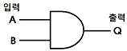
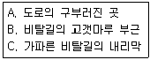
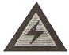
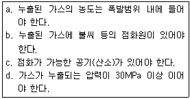

지게차유사(롤러,기중기등) (2014-07-20 기출문제)
1. 기관에서 배기상태가 불량하여 배압이 높을 때 발생하는 현상과 관련 없는 것은?
- 기관이 과열된다.
- 냉각수 온도가 내려간다.
- 기관의 출력이 감소된다.
- 피스톤의 운동을 방해한다.
(정답률: 81%)

2. 윤활유에 첨가하는 첨가제의 사용 목적으로 틀린 것은?
- 유성을 향상시킨다.
- 산화를 방지한다.
- 점도지수를 향상시킨다.
- 응고점을 높게 해준다.
(정답률: 47%)
3. 기관 운전 중에 진동이 심해질 경우 점검해야 할 사항으로 거리가 먼 것은?
- 기관의 점화시기 점검
- 기관과 차체 연결 마운틴의 점검
- 라디에이터의 냉각수 누설 여부 점검
- 연료계통의 공기 누설 여부 점검
(정답률: 41%)
4. 기관의 크랭크 케이스를 환기하는 목적으로 가장 옳은 것은?
- 크랭크 케이스의 청소를 쉽게 하기 위하여
- 출력의 손실을 막기 위하여
- 오일의 증발을 막기 위하여
- 오일의 슬러지 형성을 막기 위하여
(정답률: 71%)
5. 압력의 단위가 아닌 것은?
- kgf/cm2
- dyne
- psi
- bar
(정답률: 77%)
6. 점도지수가 큰 오일의 온도변화에 따른 점도 변화는?
- 크다.
- 작다.
- 불변이다.
- 온도와는 무관하다.
(정답률: 68%)
7. 디젤기관의 과급기에 대한 설명으로 틀린 것은?
- 흡입 공기에 압력을 가해 기관에 공기를 공급한다.
- 체적효율을 높이기 위해 인터쿨러를 사용한다.
- 배기 터빈과급기는 주로 원심식이 가장 많이 사용된다.
- 과급기를 설치하면 엔진 중량과 출력이 감소된다.
(정답률: 85%)
8. 다음 중 디젤 기관만이 가지고 있는 부품은?
- 분사노즐
- 오일펌프
- 물펌프
- 연료펌프
(정답률: 80%)
9. 커먼레일 디젤기관에서 부하에 따른 주된 연료 분사량 조절방법으로 옳은 것은?
- 저압펌프 압력 조절
- 인젝터 작동 전압 조절
- 인젝터 작동 전류 조절
- 고압라인의 연료압력 조절
(정답률: 40%)
10. 라디에이터의 구비 조건으로 틀린 것은?
- 공기 흐름 저항이 적을 것
- 냉각수 흐름 저항이 적을 것
- 가볍고 강도가 클 것
- 단위 면적 당 방열량이 적을 것
(정답률: 64%)
11. 밀봉 압력식 냉각 방식에서 보조탱크 내의 냉각수가 라디에이터로 빨려 들어갈 때 개방되는 압력 캡의 밸브는?
- 릴리프 밸브
- 진공 밸브
- 압력 밸브
- 리듀싱 밸브
(정답률: 48%)
12. 피스톤 링에 대한 설명으로 틀린 것은?
- 피스톤이 받는 열의 대부분을 실린더 벽에 전달한다.
- 압축과 팽창가스 압력에 대해 연소실의 기밀을 유지한다.
- 링의 절개구의 모양은 버튼 이음, 랩 이음 등이 있다.
- 피스톤 링이 마모된 경우 크랭크케이스 내에 블로다운 현상으로 인한 연소가스가 많아진다.
(정답률: 50%)
13. 전해액의 비중이 20℃일 때 축전지 자기방전을 설명한 것이다. 틀린 것은?(문제 오류로 가답안 발표시 2번으로 정답이 발표되었지만 확정답안 발표시 2, 3, 4번이 정답 처리되었습니다. 여기서는 2번을 누르면 정답 처리 됩니다.)
- 완전 충전 : 1.260 ~ 1,280
- 75% 충전 : 1.220 ~ 1,260
- 50% 충전 : 1.190 ~ 1,210
- 25% 충전 : 1.150 ~ 1,170
(정답률: 80%)
14. 건설기계의 교류발전기에서 마모성 부품은?
- 스테이터
- 슬립링
- 다이오드
- 엔드 프레임
(정답률: 59%)
15. 오버런닝 클러치 형식의 기동 전동기에서 기관이 기동된 후 계속해서 스위치(I/G Key)를 ST 위치에 놓고 있으면 어떻게 되는가?
- 기동전동기의 전기자에 과전류ㅏ 흘러 전기자가 탄다.
- 기동전동기가 부하를 많이 받아 정지된다.
- 기동전동기의 마그네트 스위치가 손상된다.
- 기동전동기의 피니어 기어가 고속 회전한다.
(정답률: 29%)
16. 축전지 및 발전기에 대한 설명으로 옳은 것은?
- 시동 전 전원은 발전기이다.
- 시동 후 전원은 배터리이다.
- 시동 전과 후 모든 전력은 배터리로부터 공급된다.
- 발전하지 못해도 배터리로만 운행이 가능하다.
(정답률: 49%)
17. 실드빔식 전조등에 대한 설명으로 틀린 것은?
- 대기조건에 따라 반사경이 흐려지지 않는다.
- 내부에 불활성 가스가 들어있다.
- 사용에 따른 광도의 변화가 적다.
- 필라멘트를 갈아 끼울 수 있다.
(정답률: 63%)
18. 그림과 같은 AND회로(논리적 회로)에 대한 설명으로 틀린 것은?

- 입력 A가 0이고, B가 0이면 출력 Q는 0이다.
- 입력 A가 1이고, B가 0이면 출력 Q는 0이다.
- 입력 A가 0이고, B가 1이면 출력 Q는 0이다.
- 입력 A가 1이고, B가 1이면 출력 Q는 0이다.
(정답률: 64%)
19. 무한궤도식 건설기계 프런트 아이들러에 미치는 충격을 완화시켜주는 완충장치로 틀린 것은?
- 코일 스프링식
- 압축 피스톤식
- 접지 스프링식
- 질소 가스식
(정답률: 18%)
20. 주행 중 트랙 전면에서 오는 충격을 완화하여 차체 파손을 방지하고, 운전을 원활하게 해주는 것은?
- 트랙 롤러
- 상부 롤러
- 리코일 스프링
- 댐퍼 스프링
(정답률: 41%)
21. 엔진과 직결되어 같은 회전수로 회전하는 토크 컨버터의 구성품은?
- 터빈
- 펌프
- 스테이터
- 변속기 출력축
(정답률: 33%)
22. 기중기의 각 장치 가운데 옆 방형 전도 방지를 위한 것은?
- 붐 스톱 장치
- 스윙로크 장치
- 아우트리거 장치
- 파워로-링 장치
(정답률: 70%)
23. 건설기계에서 변속기의 구비조건으로 가장 적합한 것은?
- 대형이고, 고장이 없어야 한다.
- 조작이 쉬우므로 신속할 필요는 없다.
- 연속적 변속에는 단계가 있어야 한다.
- 전달효율이 좋아야 한다.
(정답률: 77%)
24. 무한궤도식 건설기계에서 트랙이 자주 벗겨지는 원인으로 가장 거리가 먼 것은?
- 유격(긴도)이 규정보다 클 때
- 트랙의 상·하부 롤러가 마모 되었을 때
- 최종 구동기어가 마모 되었을 때
- 트랙의 중심 정열이 맞지 않았을 때
(정답률: 56%)
25. 모터 그레이더가 주행 중 연속적으로 소음이 나는 원인은?
- 휠 실린더의 피스톤이 컵이 노화 되었다.
- 클러치 레버와 시프트면의 간극이 불균일하다.
- 포크 샤프트의 토션 스프링이 소손되었다.
- 탠덤 드라이브 기어오일이 부족하다.
(정답률: 34%)
26. 지게차 주행 시 주의해야 할 사항으로 틀린 것은?
- 짐을 싣고 주행할 때는 절대로 속도를 내서는 안 된다.
- 노면의 상태에 충분한 주의를 하여야 한다.
- 적하 장치에 사람을 태워서는 안 된다.
- 포크의 끝을 밖으로 경사지게 한다.
(정답률: 85%)
27. 등록되지 아니한 건설기계를 사용하거나 운행한 자의 벌칙은?(관련 규정 개정전 문제로 여기서는 기존 정답인 2번을 누르면 정답 처리됩니다. 자세한 내용은 해설을 참고하세요.)
- 1년 이하의 징역 또는 100만 원 이하의 벌금
- 2년 이하의 징역 또는 1000만 원 이하의 벌금
- 20만 원 이하의 벌금
- 10만 원 이하의 벌금
(정답률: 62%)
28. 도로주행의 일반적인 주의사항으로 틀린 것은?
- 가시거리가 저하될 수 있으므로 터널 진입 전 헤드라이트를 켜고 주행한다.
- 고속주행 시 급 핸들조작, 급브레이크는 옆으로 미끄러지거나 전복될 수 있다.
- 야간운전은 주간보다 주의력이 양호하며 속도감이 민감하여 과속 우려가 없다.
- 비오는 날 고속주행은 수막현상이 생겨 제동효과가 감소된다.
(정답률: 86%)
29. 도로교통법에 따라 소방용 기계·기구가 설치된 곳, 소방용 방화물통, 소화전 또는 소화용 방화물통의 흡수구나 흡수관으로부터 ( ) 이내의 지점에 주차를 하여서는 아니 된다. ( ) 안에 들어갈 거리는?
- 10미터
- 7미터
- 5미터
- 3미터
(정답률: 55%)
30. 건설기계 형식 승인은 누가 하는가?
- 국토교통부장관
- 시·도지사
- 시장·군수 또는 구청장
- 고용노동부장관
(정답률: 41%)
31. 건설기계조종사면허를 받지 아니하고, 건설기계를 조종한 자에 대한 처벌기준은?(관련 규정 개정전 문제로 여기서는 기존 정답인 1번을 누르면 정답 처리됩니다. 자세한 내용은 해설을 참고하세요.)
- 1년 이하의 징역 또는 300만 원 이하의 벌금
- 6개월 이하의 징역 또는 100만 원 이하의 벌금
- 100만 원 이하의 벌금
- 50만 원 이하의 과태료
(정답률: 64%)
32. 도로교통법령에 따라 뒤차에게 앞지르기를 시키려는 때 적절한 신호방법은?
- 오픈팔 또는 왼팔을 차체의 왼쪽 또는 오른쪽 밖으로 수평으로 펴서 손을 앞뒤로 흔들 것
- 팔을 차체의 밖으로 내어 45도 밑으로 펴서 손바닥을 뒤로 향하게 하여 그 팔을 앞뒤로 흔들거나 자동차안전기준에 따라 장치된 후진등을 켤 것
- 팔을 차체의 밖으로 내어 45도 밑으로 펴거나 제동등을 켤 것
- 양팔을 모두 차체의 밖으로 내어 크게 흔들 것
(정답률: 71%)
33. 건설기계등록번호표를 가리거나 훼손하여 알아보기 곤란하게 한 자 또는 그러한 건설기계를 운행한 자에게 부과하는 과태료로 옳은 것은?
- 50만 원 이하
- 100만 원 이하
- 300만 원 이하
- 1000만 원 이하
(정답률: 60%)
34. 국내에서 제작된 건설기계를 등록할 때 필요한 서류에 해당하지 않는 것은?
- 건설기계제작증
- 수입면장
- 건설기계제원표
- 매수증서(관청으로부터 매수한 건설기계만)
(정답률: 57%)
35. 도로교통법에서는 교차로, 터널 안, 다리 위 등을 앞지르기 금지장소로 규정하고 있다. 그 외 앞지르기 금지장소를 다음 [보기]에서 모두 고르면?

- A
- A, B
- B, C
- A, B, C
(정답률: 70%)
36. 건설기계의 등록을 말소할 수 있는 사유에 해당하지 않는 것은?
- 건설기계를 폐기한 경우
- 건설기계를 수출하는 경우
- 건설기계를 장기간 운행하지 않게 된 경우
- 건설기계를 교육·연구 목적으로 사용하는 경우
(정답률: 68%)
37. 기어 펌프에 대한 설명으로 틀린 것은?
- 소형이며, 구조가 간단하다.
- 플런저 펌프에 비해 흡입력이 나쁘다.
- 플런저 펌프에 비해 효율이 낮다.
- 초고압에는 사용이 곤란하다.
(정답률: 35%)
38. 유압장치에서 액추에이터의 종류에 속하지 않는 것은?
- 감압밸브
- 유압실린더
- 유압모터
- 플런저 모터
(정답률: 40%)
39. 유압오일 내에 기포(거품)가 형성되는 이유로 가장 적합한 것은?
- 오일에 이물질 혼입
- 오일의 점도가 높을 때
- 오일에 공기 혼입
- 오일의 누설
(정답률: 80%)
40. 유압모터의 가장 큰 장점은?
- 공기와 먼지 등이 침투하면 성능에 영향을 준다.
- 오일의 누출을 방지한다.
- 압력조정이 용이하다.
- 무단변속이 용이하다.
(정답률: 60%)
41. 유압 실린더를 교환하였을 경우 조치해야 할 작업으로 가장 거리가 먼 것은?
- 오일필터의 교환
- 공기빼기 작업
- 누유 점검
- 시운전하여 작동상태 점검
(정답률: 60%)
42. 릴리프밸브에서 포핏밸브를 밀어 올려 기름이 흐르기 시작할 때의 압력은?
- 설정압력
- 허용압력
- 크랭킹압력
- 전량압력
(정답률: 55%)
43. 파스칼의 원리와 관련된 설명이 아닌 것은?
- 정지액체에 접하고 있는 면에 가해진 압력은 그 면에 수직으로 작용한다.
- 정지액체의 한 점에 있어서의 압력의 크기는 전 방향에 대하여 동일하다.
- 점성이 없는 비압축성 유체에서 압력에너지, 위치에너지, 운동에너지의 합은 같다.
- 밀폐용기 내의 한 부분에 가해진 압력은 액체 내의 여러 부분에 같은 압력으로 전달된다.
(정답률: 55%)
44. 유압장치의 정상적인 작동을 위한 일상점검 방법으로 옳은 것은?
- 유압 컨트롤 밸브의 세척 및 교환
- 오일량 점검 및 필터의 교환
- 유압 펌프의 점검 및 교환
- 오일 냉각기의 점검 및 세척
(정답률: 70%)
45. 방향제어밸브에서 내부누유에 영향을 미치는 요소가 아닌 것은?
- 관로의 유량
- 밸브 간극의 크기
- 밸브 양단의 압력차
- 유압유의 점도
(정답률: 54%)
46. 유압장치에서 유량 제어밸브가 아닌 것은?
- 교축밸브
- 분류밸브
- 유량조정밸브
- 릴리프밸브
(정답률: 42%)
47. 수공구 중 드라이버의 사용 상 안전하지 않은 것은?
- 날 끝이 수평이어야 한다.
- 전기 작업 시 절연된 자루를 사용한다.
- 날 끝이 홈의 폭과 길이가 같은 것을 사용한다.
- 전기 작업 시 금속 부분이 자루 밖으로 나와 있어야 한다.
(정답률: 84%)
48. 수공구 사용 시 안전사고 발생 원인으로 틀린 것은?
- 힘에 맞지 않는 공구를 사용하였다.
- 수공구의 성능을 알고 선택하였다.
- 사용 방법이 미숙하였다.
- 사용공구의 점검 및 정비를 소홀히 하였다.
(정답률: 83%)
49. 전조등 회로에서 퓨즈의 접촉이 불량할 때 나타나는 현상으로 옳은 것은?
- 전류의 흐름이 나빠지고 퓨즈가 끊어질 수 있다.
- 기동 전동기가 파손된다.
- 전류의 흐름이 일정하게 된다.
- 전압이 과대하게 흐르게 된다.
(정답률: 86%)
50. 안전을 위하여 눈으로 보고, 손으로 가리키고, 입으로 복창하여 귀로 듣고, 머리로 종합적인 판단을 하는 지적확인의 특성은?
- 의식을 강화한다.
- 지식수준을 높인다.
- 안전태도를 형성한다.
- 육체적 기능 수준을 높인다.
(정답률: 55%)
51. 체인블록을 이용하여 무거운 물체를 이동시키고자 할 때 가장 안전한 방법은?
- 체인이 느슨한 상태에서 급격히 잡아당기면 재해가 발생할 수 있으므로 시간적 여유를 가지고 작업한다.
- 작업의 효율을 위해 가는 체인을 사용한다.
- 내릴 때는 하중 부담을 줄이기 위해 최대한 빠른 속도로 실시한다.
- 이동 시는 무조건 최단거리 코스로 빠른 시간 내에 이동시켜야 한다.
(정답률: 75%)
52. 안전·보건표지에서 그림이 표시하는 것으로 맞는 것은?

- 독극물 경고
- 폭발물 경고
- 고압전기 경고
- 낙하물 경고
(정답률: 86%)
53. 연소의 3요소가 아닌 것은?
- 가연성 물질
- 산소(공기)
- 점화원
- 이산화탄소
(정답률: 74%)
54. 체인이나 벨트, 풀리 등에서 일어나는 사고로 기계의 운동 부분 사이에 신체가 끼는 사고는?
- 협착
- 접촉
- 충격
- 얽힘
(정답률: 81%)
55. 산업재해 중 중대재해가 아닌 것은?
- 사망자가 1명 이상 발생한 재해
- 부상자 또는 직업성질병자가 동시에 10명 이상 발생한 재해
- 3개월 이상의 요양을 요하는 부상자가 동시에 2명 이상 발생한 재해
- 4일 이상의 요양을 요하는 부상을 입은 자가 5명 발생한 재해
(정답률: 57%)
56. 안전작업의 복장상태로 틀린 것은?
- 땀을 닦기 위한 수건이나 손수건을 허리나 목에 걸고 작업해서는 안 된다.
- 옷소매 폭이 너무 넓지 않은 것이 좋고, 단추가 달린 것은 되도록 피한다.
- 물체 추락의 우려가 있는 작업장에서는 작업모를 착용해야 한다.
- 복장을 단정하게 하기 위해 넥타이를 꼭 매야 한다.
(정답률: 87%)
57. 도시가스배관이 매설된 지점에서 가스배관 주위를 굴착하고자 할 때에 반드시 인력으로 굴착해야 하는 범위는?
- 배관 좌우 1m 이내
- 배관 좌우 2m 이내
- 배관 좌우 3m 이내
- 배관 좌우 4m 이내
(정답률: 62%)
58. 다음 조건에서 도시가스가 누출되었을 경우 폭발할 수 있는 조건으로 모두 맞는 것은?

- a
- a, b
- a, b, c
- a, c, d
(정답률: 82%)
59. 감전사고 예방을 위한 주의사항의 내용으로 틀린 것은?
- 젖은 손으로는 전기 기기를 만지지 않는다.
- 코드를 뺄 때는 반드시 플러그의 몸체를 잡고 뺀다.
- 전력선에 물체를 접촉하지 않는다.
- 220V는 단상이고, 저압이므로 생명의 위협은 없다.
(정답률: 86%)
60. 고압선로 주변에서 건설기계에 의한 작업 중 고압선로 또는 지지물에 접촉 위험이 가장 높은 것은?
- 붐 또는 권상로프
- 상부 회전체
- 하부 주행체
- 장비 운전석
(정답률: 69%)